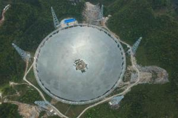

500米口径球面射电望远镜（Five-hundred-meter Aperture Spherical radio Telescope）是由中国科学院国家天文台主导建设的一座射电望远镜，位于贵州省黔南布依族苗族自治州平塘县的喀斯特洼坑中。
该设备是具有中国自主知识产权、世界最大单口径、最灵敏的射电望远镜，被誉为“中国天眼”。其主要由主动反射面系统、馈源支撑系统、测量与控制系统、接收机与终端及观测基地等几大部分构成。
1993年，东京召开的国际无线电科学联盟大会上，包括中国在内的10国天文学家提出建造新一代射电“大望远镜”。他们期望，在全球电信号环境恶化到不可收拾之前，能多收获一些射电信号。建造FAST的动机肇始于此。
1994年7月，FAST工程概念提出。在这一背景下，原北京天文台提出了利用中国西南部的喀斯特地貌建造阿雷西博型LT的中国方案，最初起名为KARST。
1995年11月，以北京天文台为主，联合国内20余家大学和科研机构，组建了“大射电望远镜”中国推进委员会，由南仁东研究员任主任。
2001年，FAST预研究作为中科院首批“创新工程重大项目”立项，并得到中国科学院及科技部的支持。
2001年10月，知识创新工程首批重大项目“FAST预研究”总体验收。
2007年7月，国家发展和改革委员会批复500米口径球面射电望远镜国家重大科技基础设施立项建议书，原则同意将FAST项目列入国家高技术产业发展项目计划，FAST工程进入可行性研究阶段。
2008年10月，国家发改委批复500米口径球面射电望远镜国家重大科技基础设施项目可行性研究报告，FAST工程进入初步设计阶段。
2009年2月，500米口径球面射电望远镜国家重大科技基础设施初步概算获得贵州省发改委批复。
2011年3月，FAST工程开工报告获得批复，工程开工项目初步设计和概算获得中国科学院和贵州省人民政府的批复。
工程于2011年3月正式开工建设，预计2016年9月竣工，工期5.5年。望远镜台址挖掘完工，基地、主动反射面的建造均于2013年内动工。总投资概算为6.67亿元。2015年2月4日上午，位于贵州平塘的500米口径球面射电望远镜（FAST）安装了最后一根钢索，索网制造和安装工程结束。这意味着FAST的支撑框架建设完成，进入了反射面面板拼装阶段。
2015年国庆前夕，随着长度3.5千米的10千伏高压线缆通过耐压测试、变电站设备调试完成，中科院国家天文台500米口径球面射电望远镜（简称FAST）项目综合布线工程完成，具备供电条件，这标志着“天眼”的神经系统已经成型，FAST工程进入最后的冲刺阶段。
2015年11月21日，在贵州黔南安装建设的500米口径球面射电望远镜（FAST）馈源支撑系统进行首次升舱试验，6根钢索拖动馈源舱提升108米，并进行相应的功能性测试。
2016年3月8日，在贵州省平塘县建设的世界最大单口径射电望远镜——500米口径球面射电望远镜（FAST），已完成3492块反射面面板安装，完成比例达78.47%。2016年4月10日，500米口径球面射电望远镜（FAST）已完成4185块反射面面板安装，完成比例达94.04%。
2016年6月29日，FAST已完成4443块反射面面板安装，完成比例达99.8%。
2016年7月3日，500米口径球面射电望远镜的最后一块反射面单元成功吊装，这标志着FAST主体工程顺利完工。
2016年9月25日，在贵州省平塘县的喀斯特洼坑中落成启用，开始接收来自宇宙深处的电磁波，“天眼”方圆5公里将成为“静默区”。
2017年10月，发现2颗新脉冲星，距离地球分别约4100光年和1.6万光年，是中国射电望远镜首次发现脉冲星。
2017年12月，FAST新发现3颗脉冲星，且这3颗脉冲星已分别得到认证。
自2016年9月25日落成启用以来，中国天眼”共发现51颗脉冲星候选体，其中有11颗已被确认为新脉冲星。
2018年4月28日，从中国科学院国家天文台获悉，“天眼”FAST（500米口径球面射电望远镜）首次发现毫秒脉冲星并得到国际认证。新发现的脉冲星J0318+0253自转周期5.19毫秒，根据色散估算距离地球约4000光年，由FAST使用超宽带接收机进行一小时跟踪观测发现，是至今发现的射电流量最弱的高能毫秒脉冲星之一。
2018年7月12日，由贵州省科学技术奖励大会获悉，500米口径球面射电望远镜已发现43颗脉冲星。
2018年9月12日，500米口径球面射电望远镜已发现59颗优质的脉冲星候选体，其中有44颗已被确认为新发现的脉冲星。
2019年，500米口径球面射电望远镜接受国家验收，并开始搜寻外星人。
2019年5月起，《贵州省无线电管理条例》施行。《条例》专门为FAST的保护设立专章，是贵州保护FAST的又一新举措。《条例》共六章五十条，其中第三章专门为FAST保护。《条例》为保障FAST正常运行必备的电磁环境划定了射电望远镜电磁波宁静区，由核心区、中间区和边远区组成。以射电望远镜台址为圆心，半径5公里的区域为核心区，5至10公里的环带为中间区，10至30公里的环带为边远区。《条例》明确，核心区内禁止设置、使用无线电台(站)，禁止建设对射电望远镜产生电磁环境影响的项目及辐射无线电波的设施，禁止修建建(构)筑物，原住居民应当全部迁出并妥善安置。同时，禁止携带手机、数码相机、平板电脑、无人机等产生电磁辐射的电子产品进入核心区。无关车辆不得进入核心区。